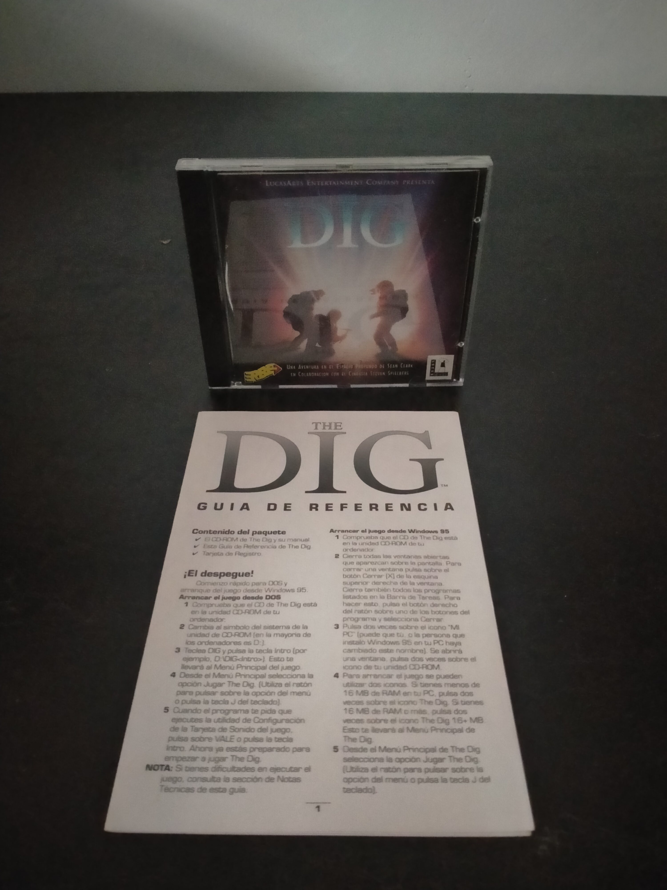

Ficha #000000
The Dig
The Dig es una aventura gráfica de ciencia ficción desarrollada por LucasArts y publicada originalmente en 1995 a partir de una idea concebida por Steven Spielberg. La historia sigue a un grupo de astronautas enviado para desviar un asteroide que amenaza la Tierra, misión que termina trasladándolos a un remoto mundo alienígena repleto de ruinas, tecnología desconocida y enigmas arqueológicos. Utiliza el motor SCUMM y el sistema musical interactivo iMUSE, combinando escenarios dibujados, animación tradicional, secuencias cinematográficas y una ambientación más seria y contemplativa que la habitual en otras aventuras de LucasArts. Esta edición española para PC CD-ROM ofrece ejecución tanto en MS-DOS como en Windows 95 y conserva la localización al castellano en un formato físico representativo de la expansión del videojuego multimedia durante mediados de los años noventa.
- Formato
- Jewel Case
- Plataforma
- MsDos Win95
- Género
- Aventura gráfica Point and click Ciencia ficción Aventura espacial Puzzle
- Serie
- Todos Jewel Case
- Desarrollador
- LucasArts Entertainment Company
- Distribuidor
- LucasArts Entertainment Company, Erbe Software
- EAN
- —
Contenido de la edición
- CD-ROM
- Manual
- Guía de referencia
- Tarjeta de registro
Preservación
- Protección
- No determinado
- Formato recomendado
- BIN/CUE
- Jugable en virtualización
- Sí
Preservación recomendada mediante imagen completa BIN/CUE del CD-ROM original y digitalización de la guía de referencia, el manual y la tarjeta de registro. La ejecución virtual es viable mediante un entorno MS-DOS o Windows 95 virtualizado y mediante intérpretes compatibles con aventuras SCUMM, conservando montada la imagen del disco cuando sea necesario acceder a sus datos.